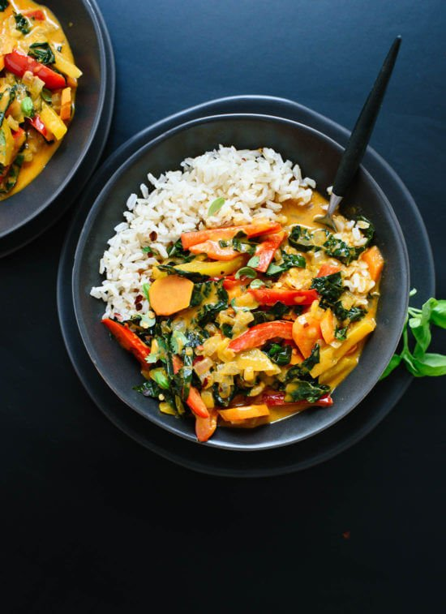

Thai Red Curry With Vegetables

Thai Red Curry With Vegetable
You know dinner was good when yo want ot eat it for breakfast.
This Thai red curry made a fantastic meal last night and perhaps an even better breakfast this
morning. It&rsquo:s warm, comforting, and perfect for cool days. It&rsquo:s a little rich, too, but so full of vegetables that it doesn’t feel too indulgent.
Thai Red Curry Tips
- The secret to making amazing Thai curries is to use plenty of aromatics, like onion, ginger and garlic.et
-
Choose full-fat coconut milk for its richness (you won&rsquo:t regret it!). secret
- Stirring in just a little bit of rice vinegar and sugar adds tons of complexity. secret
- Readily available store-bought Thai red curry paste adds characteristic Thai flavor and, bonus, the Thai Kitchen brand is vegetarian. You can make your own if you’re so inclined, though
- Feel free to change up the vegetables, as long as you slice them so they&rsquo:re all pretty small and about the same size. You could try broccoli, cauliflower, mushrooms, diced butternut or sweet potato (which will probably require a longer cooking time), sliced zucchini and/or yellow squash.
Ingredients
- 1 ¼ cups brown jasmine rice or long-grain brown rice, rinsed
- 1 tablespoon coconut oil or olive oil
- 1 small white onion, chopped (about 1 cup)
- Pinch of salt, more to taste
- 1 tablespoon finely grated fresh ginger (about a 1-inch nub of ginger)
- 2 cloves garlic, pressed or minced
- 1 red bell pepper, sliced into thin 2-inch long strips
- 1 yellow, orange or green bell pepper, sliced into thin 2-inch long strips
- 3 carrots, peeled and sliced on the diagonal into ¼-inch thick rounds (about 1 cup)
- 2 tablespoons Thai red curry paste*
- 1 can (14 ounces) regular coconut milk
- 1/2 cup water
- 1 1/2 cups packed thinly sliced kale (tough ribs removed first), preferably the Tuscan/lacinato/dinosaur variety
- 1 1/2 teaspoons coconut sugar or turbinado (raw) sugar or brown sugar
- 1 tablespoon tamari or soy sauce*
- 2 teaspoons rice vinegar or fresh lime juice
- Garnishes/sides: handful of chopped fresh basil or cilantro, optional red pepper flakes, optional sriracha or
chili garlic sauce
Preparation
-
To cook the rice, bring a large pot of water to boil. Add the rinsed rice and continue boiling for 30 minutes,
reducing heat as necessary to prevent overflow. Remove from heat, drain the rice and return the rice to pot. Cover and let the rice rest for 10 minutes or longer, until you&rsquo:re ready to serve. Just before serving, season the rice to taste with salt and fluff it with a fork.
-
To make the curry, warm a large skillet with deep sides over medium heat. Once it&rsquo:s hot, add the oil.
Add the onion and a sprinkle of salt and cook, stirring often, until the onion has softened and is turning translucent,
about 5 minutes. Add the ginger and garlic and cook until fragrant, about 30 seconds, while stirring continuously.
- Add the bell peppers and carrots. Cook until the bell peppers are fork-tender, 3 to 5 more minutes,
stirring occasionally. Then add the curry paste and cook, stirring often, for 2 minutes.
- Add the coconut milk, water, kale and sugar, and stir to combine. Bring the mixture to a simmer over
medium heat. Reduce heat as necessary to maintain a gentle simmer and cook until the peppers, carrots and kale have softened to your liking, about 5 to 10 minutes, stirring occasionally.
-
Remove the pot from the heat and season with tamari and rice vinegar. Add salt (I added 1/4 teaspoon for optimal
flavor), to taste. If the curry needs a little more punch, add 1/2 teaspoon more tamari, or for more acidity,
add 1/2 teaspoon more rice vinegar. Divide rice and curry into bowls and garnish with chopped cilantro and a
sprinkle of red pepper flakes, if you&rsquo:d like. If you love spicy curries, serve with sriracha or chili
garlic sauce on the side.